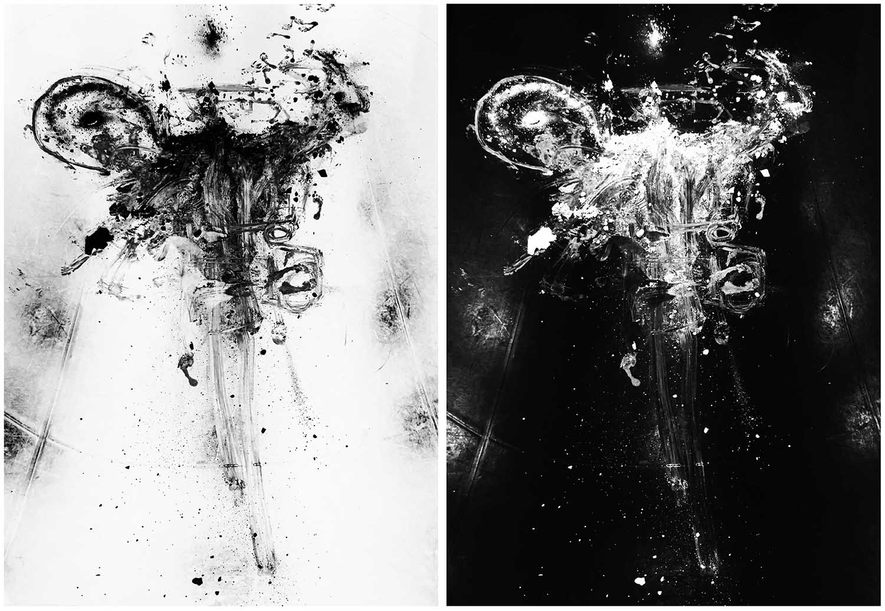
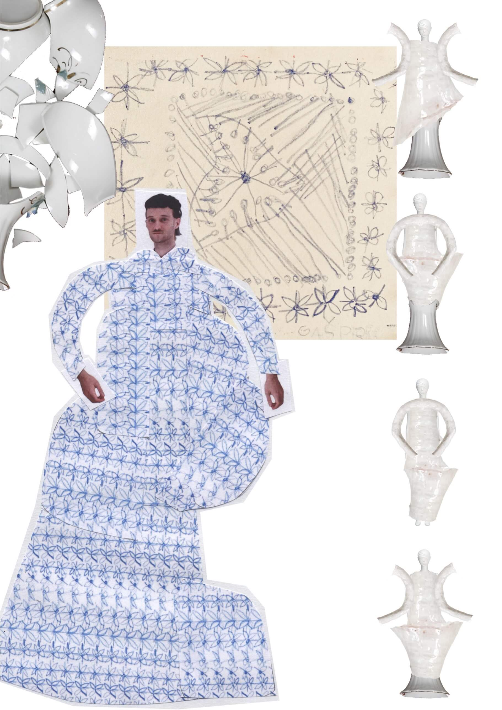
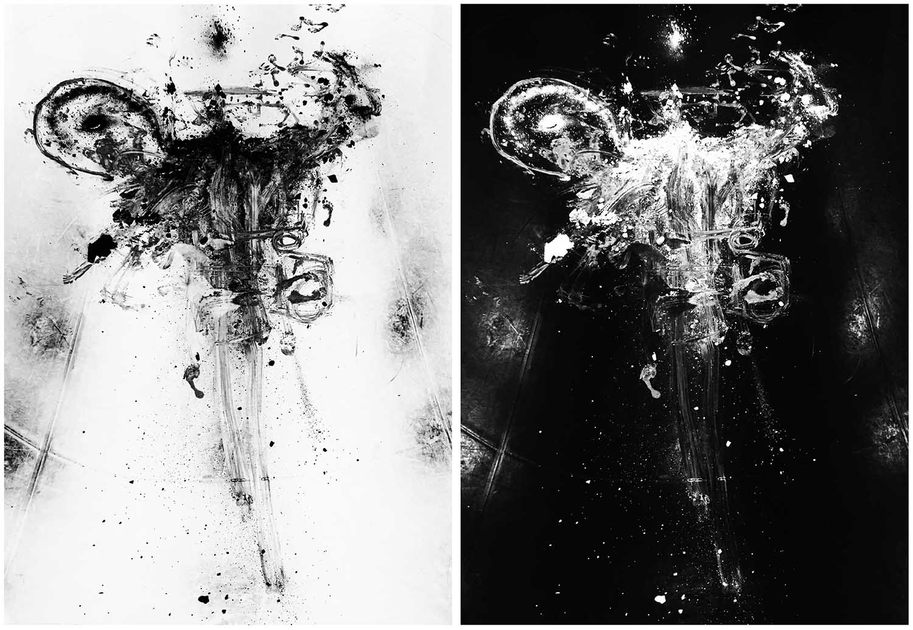
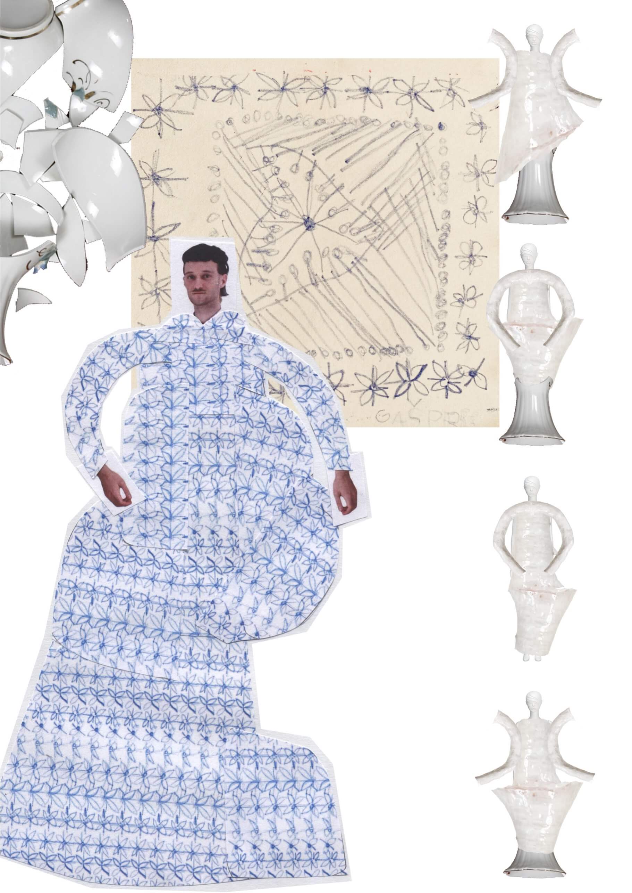

Garnir2
 



Večdisciplinarna blagovna znamka in kolekcija oblačil / Avtorja: Gašper Gajšek, Klara Rešetič / Mentorica: doc. Petja Zorec / 2021
GARNIR 2: We like to stay at home / A multi-disciplinary brand and clothing collection / Authors: Gašper Gajšek, Klara Rešetič / Mentor: Asst. Prof. Petja Zorec / 2021
Blagovna znamka Garnir2 je nastala kot odgovor študentov magistrskega študija, Gašperja Gajška in Klare Rešetič, na vse bolj pospešeno in neosebno delovanje modne industrije. Mnogostranskost znamke se odraža v združevanju različnih oblikovalskih in umetniških področij; oblikovanja oblačil in dodatkov, kostumografije, scenografije, stilizma, fotografije, produktnega ter unikatnega oblikovanja.
The brand Garnir2 emerged as a response from two master’s students, Gašper Gajšek and Klara Rešetič, to the increasingly accelerated and impersonal functioning of the fashion industry. The brand’s versatility is reflected in combining various design and artistic fields: clothing and accessories design, costume design, set design, styling, photography, product design and applied arts.
Z multidisciplinarnim pristopom k oblikovanju želita avtorja vrniti prisotnost zgodbe in pristnost produkta, za kateri menita, da ju v modni industriji primanjkuje. Ime blagovne znamke izhaja iz francoskega glagola garnir - (o)krasiti ali garnirati, s katerim avtorja opredeljujeta oblikovalsko identiteto blagovne znamke, ki je krašenje posameznikovega telesa, prostora, v katerem prebiva, kot tudi posameznikove notranjosti.
With a multidisciplinary approach to design, the authors aim to bring back the presence of a story and the authenticity of the product, which they believe is lacking in the fashion industry. The brand’s name comes from the French verb garnir - to decorate or garnish. With this name, the authors define the brand’s design identity, which is the decorating of the individual’s body, the space in which the individual resides and the individual’s interior.
Projekti dueta ves čas preizprašujejo mnogotere vloge, ki jih obleka zaseda v vsakdanjem življenju; kot ovojnica, ki preoblikuje telo, kot arhitektura, pohištvo, skulptura, kot umetniško delo, ko ji je odvzeta funkcionalnost nošnje. Obleko obravnavata tudi kot element humorja, za podajo kritike družbi oz. orodje za pobeg pred realnostjo.
The duo’s projects constantly question the multiple roles that clothes play in everyday life: as a veil that transforms the body, as architecture, as furniture, as sculpture and as a work of art when stripped of its functionality as attire. They also approach clothing as an element of humour, as a means to critique society or as a tool to escape from reality.
Skozi večdisciplinarni projekt – kolekcijo unikatnih oblačil - Doma nam je lepo, se naslanjata na izkušnjo pandemije koronavirusa in premik posamzenika iz javnega okolja v intimo lastnih bivališč. V času izolacije se je, bolj kot kadar koli prej, izpostavila pomembnost fizične in psihološke vrednosti posameznikovega primarnega življenjskega prostora (varnost, udobnost, toplina) in stvari, ki ga obkrožajo.
Through the multidisciplinary project – the collection of unique clothes titled We like to stay at home – they outline the experience of the coronavirus pandemic and the shift of individuals from the public environment to the intimacy of their homes. During the time of isolation, more than ever before, the importance of the physical and psychological value of the individual’s primary living space (safety, comfort, warmth) and the things surrounding it became apparent.
Izhodišče za kolekcijo je bila želja po vrnitvi k pristnosti, ki jo predstavlja otroštvo in otroške risbe avtorjev, v katerih je opazna neobremenjenost s pravili ustvarjanja, ki jih zaradi vplivov zunanjega sveta prevzamemo v procesu odraščanja. Kolekcija poustvari otroško svobodno kreativnost z uporabo nekonvencionalnih materialov (alu folija, koruzna zrna, purpena...), neproporcionalnih silhuet in zamudnih ročnih tehnik.
The starting point for the collection was the desire to return to the authenticity represented by childhood and the children’s drawings of the authors, in which there is a noticeable unencumberedness with the rules of creation that we adopt in the process of growing up due to the influences of the outside world. The collection recreates childlike creativity through unconventional materials (aluminium foil, corn kernels, polyurethane foam, etc.), disproportionate silhouettes and time-consuming handcraft techniques.
Končni izdelki so predstavljeni skozi dokumentarno studijsko fotografijo ter vzdušne, doma posnete fotografije in interaktivno igro, s pomočjo katere lahko vsak posameznik postane režiser modnega editoriala.
The final products are presented through documentary studio photography, home-shot photos and an interactive game that allows each individual to become the director of a fashion editorial.